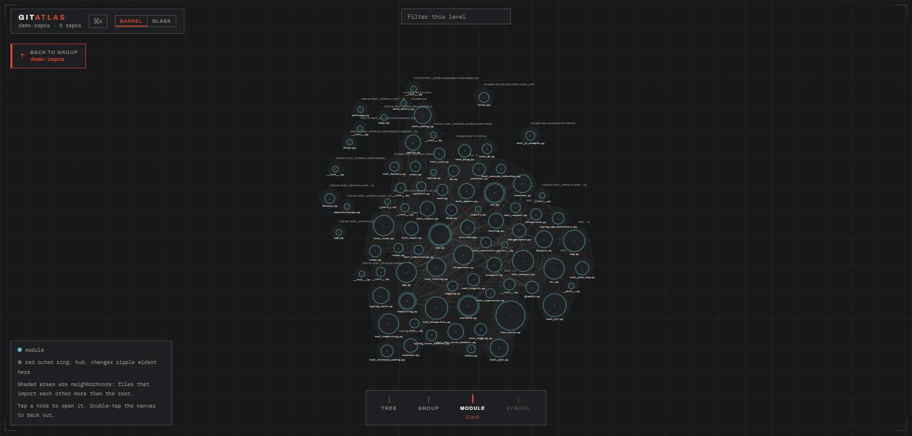
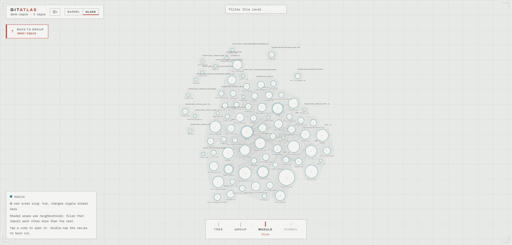
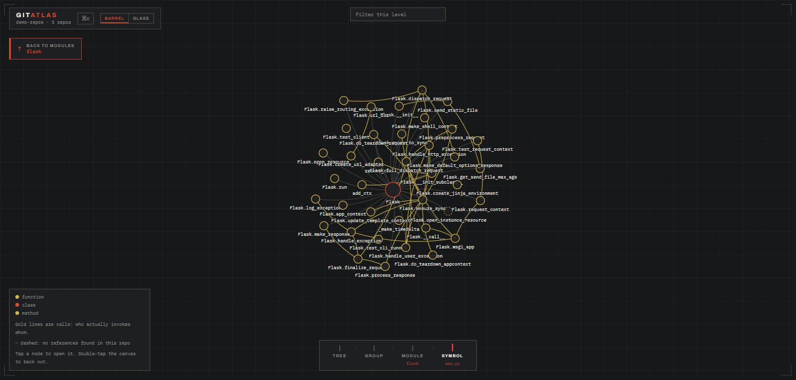
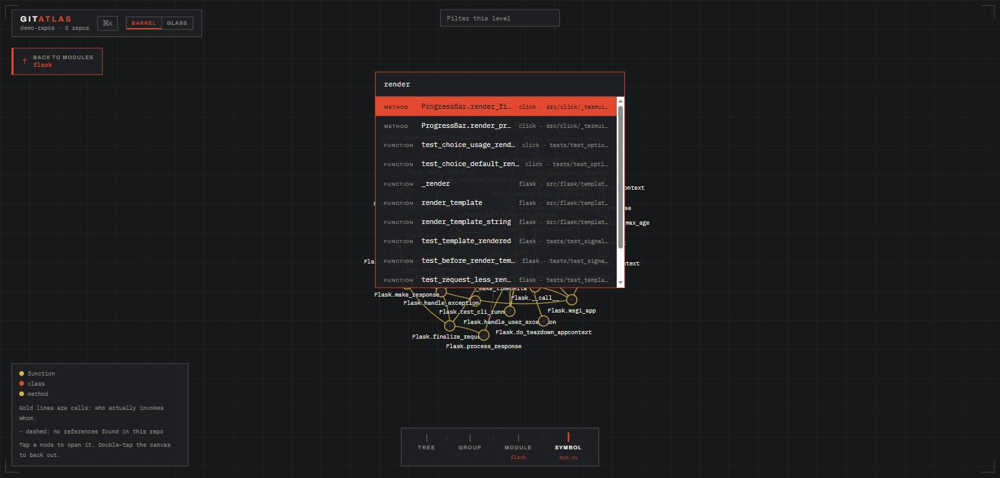

MIT open source / local only / 21 languages
One map. Every repo. Down to the function.
Point it at a folder of repositories. Get one interactive HTML file that zooms from your whole system, to a repo, to a module, to a single function. No server, no cloud, no account. Your code never leaves your machine.
01 the bottleneck moved
Agents write the code now. Somebody still has to understand it.
Writing code stopped being the bottleneck. Understanding a codebase you did not write, and increasingly a codebase nobody wrote, is the expensive part. Your architecture diagram describes a company you no longer work at, and the one person who understood billing left in March.
gitatlas makes the map a file. One command, one HTML file, openable by anyone from the intern to the VP. It regenerates from the code, so it cannot drift the way the wiki diagram did.
02 the map
Four zoom levels. The camera flies between them.
Tree
Every repo, directory, and file on one page, folding and unfolding, with languages and symbol counts inline.
Group
Repos as nodes. The whole system at cruising altitude, small enough for a manager, honest enough for an engineer.
Module
Files and their imports, shaded neighborhoods, red-ringed hubs. The level where refactors are planned.
Symbol
Functions, classes, methods, inheritance, and gold call edges. Who actually invokes whom.



Neighborhoods are computed, not filed
Shaded regions group files that lean on each other and touch the rest lightly. When a utils file has quietly become load-bearing for billing, it shows up inside the billing neighborhood no matter which folder it lives in.
Hubs are where change ripples widest
A red ring marks the modules far above typical connection count. First place to look before a refactor, last place to edit casually on a Friday.
Press ⌘K and go anywhere
Type a few letters of any repo, file, class, or function across the entire group, and the camera flies to it. Hovering a node dims everything except its direct connections.

03 feed it to your agent
Agents are brilliant sprinters with amnesia.
Every session, yours greps around, rebuilds a mental model from scratch, and bills you for it. Hand it the map instead. Both doors re-verify source fingerprints before answering, so an agent is never handed stale file:line data without a warning inside the result.
A map that has drifted from the code is worse than no map. gitatlas check exits 1 when anything is stale, and gitatlas extract --if-stale is the one-liner for CI jobs and agent hooks.
04 the contract
Three rules it will not break.
The schema is the contract
Extractor and viewer never know about each other. They agree on a versioned JSON schema and nothing else, which is why you can throw the viewer away and feed the graphs to something else.
Artifacts are files
No daemon, no database, no required network. The map opens offline, on a plane, in a bunker. Only the webfonts phone home, and when they cannot, you get system faces and the exact same map.
Every edge carries confidence
Edges are exact, resolved, or inferred. Guesses are drawn dashed and labeled. When helper() could be three different symbols, gitatlas emits no edge rather than a wrong one. Nothing is upgraded to a fact.
Nothing comes from a language model
Same repos in, pixel-identical map out, every run. Layout is computed once at extract time, sorted iteration, explicit tie-breaking. Determinism is load-bearing, and the tests assert it.
05 the instrument panel
Six commands. Twenty-one languages.
| gitatlas extract <folder> | Build the map |
| gitatlas check <folder> | Exit 0 fresh, 1 stale |
| gitatlas brief | Token-budgeted digest for agent context |
| gitatlas mcp | Serve the map to agents over MCP |
| gitatlas scope | Rank the neighborhood around a bug signal |
| gitatlas site | Hosted playground for public GitHub repos |
TypeScript and JavaScript go through the TypeScript compiler API. The other nineteen go through tree-sitter grammars compiled to WebAssembly, so the install has zero native build steps and works on Windows the first time.
06 ship it with the code
Every repo should ship with its own map.
The same way it ships with a README. Copy the GitHub Action from the repo and every push to main regenerates the map. Point it at GitHub Pages and it becomes a URL your team can bookmark.